INSTITUIÇÃO DE ENSINO [preencher: nome da faculdade]
[preencher: curso]
Relatório de Projeto — Etapa 1 (Parcial)
Disciplina: HOW X 2025-2 [ajustar se necessário]
Tema: Resolvendo problemas na comunidade em que estamos inseridos
Integrantes do grupo:
[Nome completo — RA]
[Nome completo — RA]
[Nome completo — RA]
Americana — SP
2026
1 Etapa 1
1.1 Introdução
1.2 Geração de Ideia
1.3 Prova de Conceito
1.4 SCRUM Configurado
1.4.1 Ferramentas para Gerenciamento Online
1.5 CANVAS
1.5.1 Criação de Modelo de Negócios
1.5.2 Canvas de Proposta de Valor
1.5.3 Canvas de Modelo de Negócio (Business Model Canvas)
1.5.4 Canvas MVP
1.6 MVP – Mínimo Produto Viável
1.6.1 Prototipação e Testes do Produto
1.6.2 Prototipação
1.6.3 Testes de Produtos
1.6.4 Estrutura do MVP
1.6.5 Implementação do MVP
1.7 Análise Paramétrica de Concorrentes
1.8 Vídeo de Apresentação
2 Etapa 2
2.1 Aplicação e Validação do MVP com Usuários Reais
2.2 Entrega Técnica: Arquivos-Fonte e Executáveis
2.3 Socialização dos Resultados – Seminário Virtual
3 Conclusão
4 Referências Bibliográficas
Este capítulo apresenta o desenvolvimento parcial do projeto MrBur, desde a identificação do problema na comunidade até a construção e os testes do Mínimo Produto Viável (MVP). São descritos o processo de geração da ideia, a prova de conceito, a organização do trabalho por meio do framework SCRUM, a modelagem de negócio com a metodologia CANVAS, a estrutura e a implementação do MVP, a análise dos concorrentes e o vídeo de apresentação.
O setor de alimentação fora do lar é um dos pilares econômicos das comunidades urbanas. Em cidades do interior, como Americana (SP), hamburguerias e lanchonetes de pequeno e médio porte representam fonte de renda para famílias e geram empregos diretos e indiretos, incluindo os entregadores. Entretanto, esses comércios enfrentam dificuldades concretas: a dependência de aplicativos de marketplace que cobram comissões elevadas (frequentemente entre 12% e 30% por pedido), a ausência de um canal próprio de relacionamento com o cliente e a informalidade na gestão das entregas locais.
Diante desse cenário, o presente projeto propõe o MrBur — A Ordem, uma plataforma web progressiva (PWA) de fidelização gamificada e pedidos diretos, voltada a comércios de alimentação locais. A solução busca reduzir a dependência de intermediários caros, fortalecer o vínculo entre o estabelecimento e sua clientela e organizar a operação de entrega com os motoboys da própria comunidade. O presente relatório, de caráter parcial (Etapa 1), documenta a concepção, a prototipação, os testes e a implementação do MVP, evidenciando os resultados já alcançados.
O documento está organizado conforme as seções a seguir: geração da ideia e prova de conceito; configuração do processo ágil (SCRUM); modelagem de negócio (CANVAS); descrição do MVP, sua estrutura, prototipação, testes e implementação; análise paramétrica dos concorrentes; e o vídeo de apresentação. Ao final, são apresentadas a conclusão parcial e as referências bibliográficas.
A ideia nasceu da observação direta de um problema recorrente na comunidade: pequenas hamburguerias locais perdem margem de lucro significativa para plataformas de entrega e não conseguem manter um relacionamento direto com seus clientes, ficando reféns dos algoritmos e das taxas desses intermediários. Paralelamente, os entregadores que atuam na região, muitas vezes de forma informal, carecem de organização e de um canal claro de comunicação com o estabelecimento e com o cliente.
A partir de sessões de brainstorming, o grupo levantou diferentes hipóteses de solução: (i) um cardápio digital simples; (ii) um programa de fidelidade por pontos; e (iii) uma plataforma completa que unisse pedidos, fidelização gamificada e gestão de entregas. Optou-se pela terceira hipótese por entregar maior valor percebido e por endereçar simultaneamente os três atores do problema — o estabelecimento, o cliente e o entregador.
O conceito escolhido foi o de uma experiência "premium gamificada", na qual o cliente se torna um "agente" de uma ordem secreta, acumula méritos (pontos) a cada compra, cumpre missões, sobe de patente e troca pontos por recompensas. Essa narrativa diferencia a marca e aumenta o engajamento e a recorrência, atacando diretamente o problema de retenção de clientes dos comércios locais.
A prova de conceito (PoC) teve como objetivo verificar a viabilidade técnica e a aderência da proposta antes do desenvolvimento completo. Foi construído um protótipo de alta fidelidade da interface, com a identidade visual definitiva (tema escuro premium com detalhes em dourado), simulando os principais fluxos: cadastro por convite, montagem de pedido, acúmulo de méritos e resgate de recompensas.
Em seguida, validou-se a arquitetura tecnológica escolhida — uma aplicação web progressiva (PWA) construída com HTML, CSS e JavaScript puro, apoiada na plataforma Firebase (autenticação, banco de dados Firestore em tempo real, armazenamento e hospedagem). A PoC confirmou que era possível: (i) autenticar usuários e controlar acesso por papéis; (ii) refletir mudanças de estado em tempo real entre o cliente e o painel administrativo; e (iii) instalar a aplicação no dispositivo como um aplicativo nativo. Com a viabilidade comprovada, evoluiu-se o protótipo para um MVP operacional, descrito nas seções seguintes.
A condução do projeto adotou o framework ágil SCRUM, adequado a projetos de software com requisitos que evoluem ao longo do tempo. Definiram-se os papéis de Product Owner (responsável por priorizar o backlog e representar a visão do produto), Scrum Master (responsável por remover impedimentos e zelar pelo processo) e Time de Desenvolvimento (responsável pela construção do incremento).
O trabalho foi organizado em Sprints curtas, com um backlog de produto contendo as funcionalidades priorizadas (autenticação, catálogo, pedidos, gamificação, painel administrativo, entregas e PWA). Ao final de cada Sprint, um incremento funcional foi entregue e publicado, permitindo validação contínua. Reuniões de planejamento, acompanhamento e revisão orientaram a evolução do produto.
Para o gerenciamento online do projeto e a colaboração do grupo, foram utilizadas as seguintes ferramentas:
feat, fix, refactor) que evidencia a evolução do produto. Repositório: github.com/RondineleG/mbr.Para estruturar o modelo de negócios, utilizou-se a metodologia CANVAS, que permite visualizar de forma sistêmica como a solução cria, entrega e captura valor. Foram elaborados três artefatos: o Canvas de Proposta de Valor, o Business Model Canvas e o Canvas do MVP, apresentados a seguir.
O Canvas de Proposta de Valor relaciona as dores e os ganhos dos clientes com os produtos e serviços oferecidos. Consideraram-se dois perfis: o estabelecimento (hamburgueria local) e o consumidor final.
| Dores do cliente | Aliviadores de dor (solução) |
|---|---|
| Altas taxas dos marketplaces; baixa margem. | Canal de pedidos próprio, sem comissão de intermediário. |
| Baixa fidelização e recorrência. | Gamificação (méritos, missões, ranks, recompensas). |
| Falta de relação direta com o cliente. | Base de clientes própria e comunicação direta. |
| Entregas desorganizadas. | Painel de entregas para o motoboy, com rota e chat. |
| Ganhos esperados | Criadores de ganho (solução) |
|---|---|
| Mais recorrência e ticket médio. | Recompensas e missões incentivam novas compras. |
| Experiência diferenciada. | Narrativa "agente da Ordem", tema premium, app instalável. |
| Operação organizada e em tempo real. | Status do pedido atualizado instantaneamente; chat. |
| Bloco | Descrição |
|---|---|
| Segmentos de Clientes | Hamburguerias e lanchonetes locais; consumidores da comunidade; entregadores (motoboys). |
| Proposta de Valor | Pedidos diretos sem comissão de marketplace, fidelização gamificada e gestão de entregas integrada. |
| Canais | Aplicativo web progressivo (PWA) instalável; link direto; redes sociais do estabelecimento. |
| Relacionamento | Automatizado e gamificado (méritos, missões, ranking); chat direto na entrega. |
| Fontes de Receita | Assinatura mensal do estabelecimento (SaaS); planos por porte; (futuro) taxa simbólica por pedido. |
| Recursos-Chave | Plataforma (código), infraestrutura Firebase, identidade visual, equipe de desenvolvimento. |
| Atividades-Chave | Desenvolvimento e manutenção do software, suporte ao estabelecimento, evolução de funcionalidades. |
| Parcerias-Chave | Estabelecimentos locais, entregadores, provedores de nuvem (Google/Firebase). |
| Estrutura de Custos | Infraestrutura em nuvem, desenvolvimento, suporte e marketing. |
O Canvas MVP delimita o mínimo necessário para validar a proposta com usuários reais.
| Item | Definição no MVP |
|---|---|
| Proposta | Fidelização gamificada + pedidos diretos para uma hamburgueria. |
| Funcionalidades mínimas | Cadastro por convite, catálogo, carrinho, pedido, méritos/missões, painel admin, entregas. |
| Métricas | Pedidos realizados, méritos creditados, taxa de conversão de convites, recompensas resgatadas. |
| Hipótese a validar | A gamificação aumenta a recorrência e a satisfação do cliente do comércio local. |
O MVP do MrBur foi desenvolvido e publicado em ambiente real, acessível em https://trabalhohowx.web.app. Trata-se de uma aplicação web progressiva funcional, com dados reais persistidos em nuvem e atualização em tempo real.
O desenvolvimento seguiu um ciclo de prototipação seguida de testes. Partiu-se de um protótipo de alta fidelidade que definiu a identidade visual e os fluxos; em seguida, o protótipo foi transformado em produto operacional, submetido a testes funcionais a cada incremento. Os defeitos identificados foram registrados e corrigidos iterativamente.
A prototipação contemplou as principais telas dos três perfis do sistema: o agente (cliente que faz o pedido), o administrador e o entregador (motoboy). Para a primeira versão de validação, a plataforma foi deliberadamente delimitada, por meio do mecanismo de controle de funcionalidades por papel, ao núcleo essencial do problema: Cardápio, Monte Seu Lanche, Sacola e Pedidos. As demais funcionalidades (clube de gamificação, loja de méritos, missões, convites e busca) permanecem desabilitadas para o agente nesta etapa, podendo ser liberadas progressivamente pelo administrador. As figuras a seguir apresentam as telas do MVP em funcionamento.
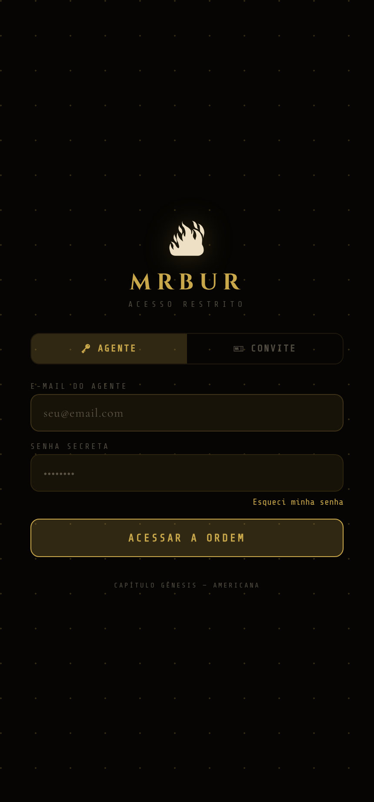
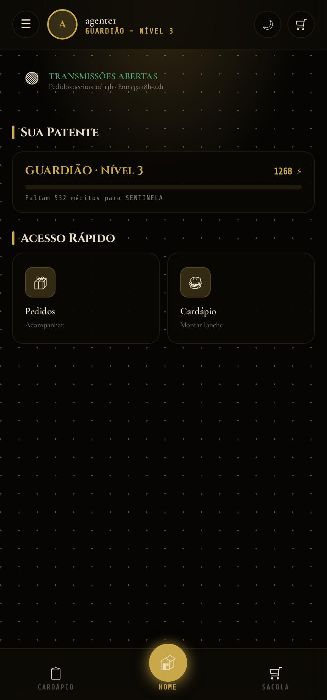
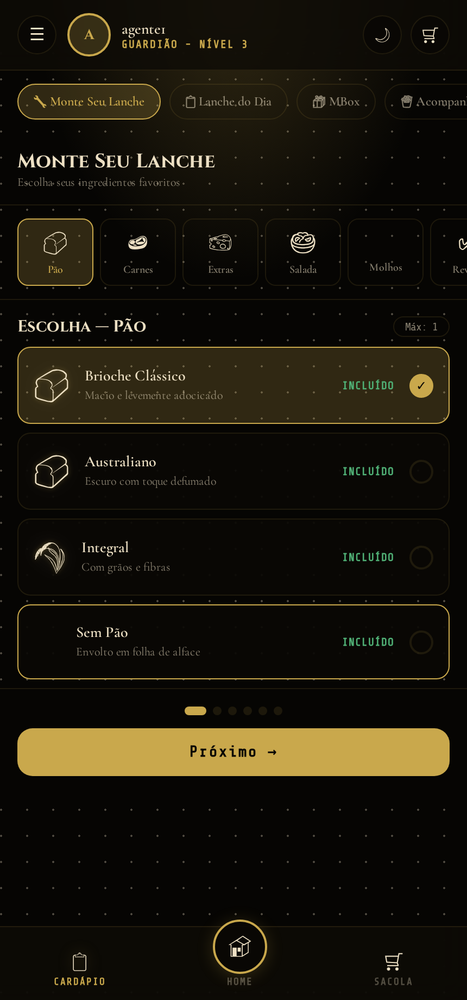
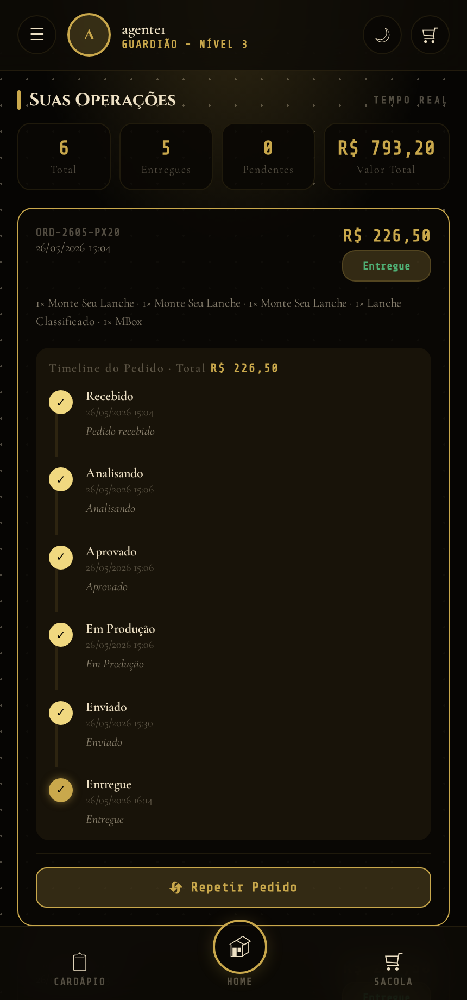
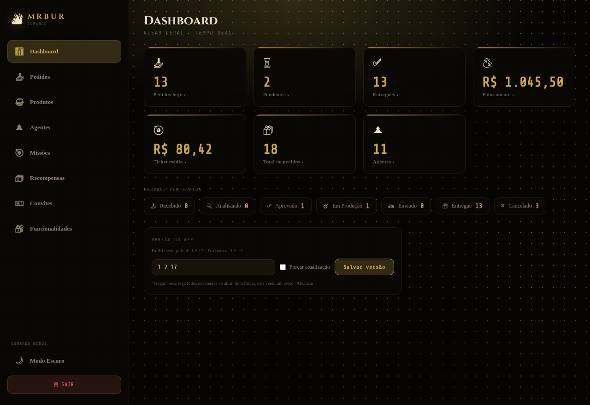
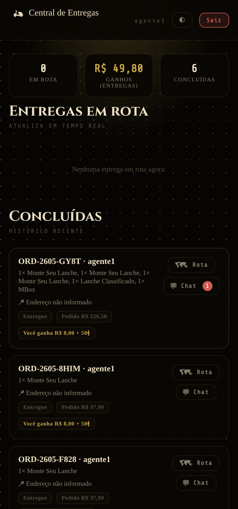
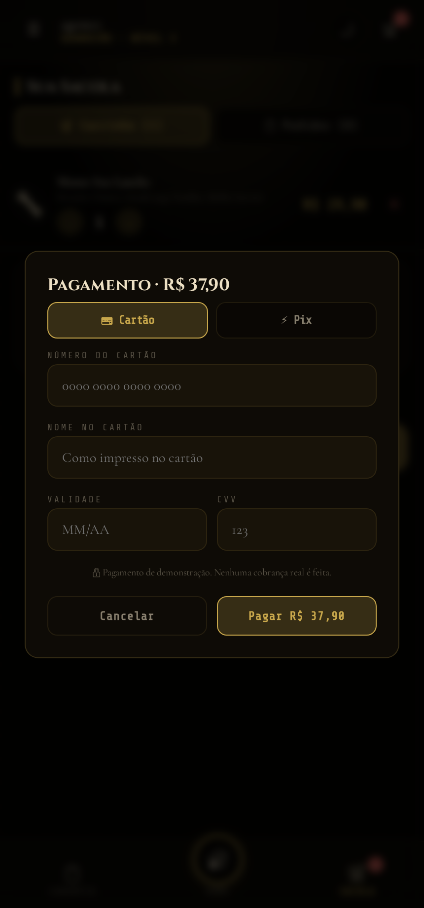
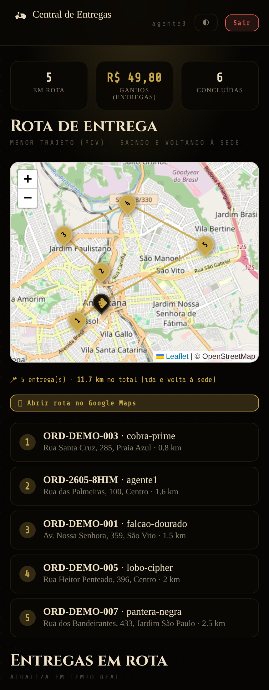
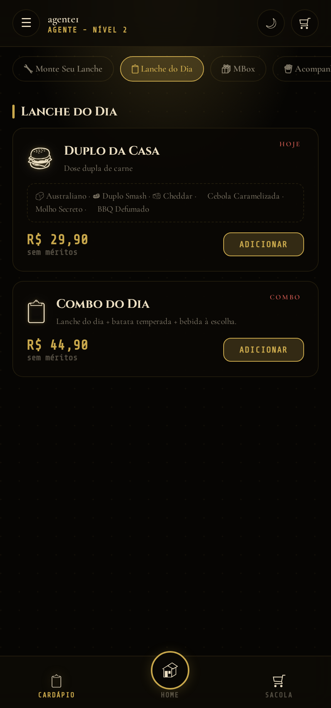
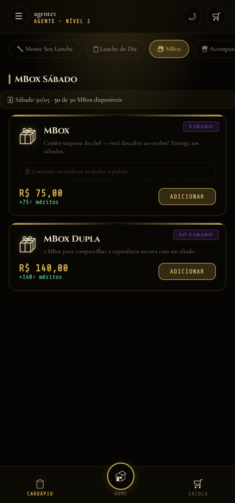
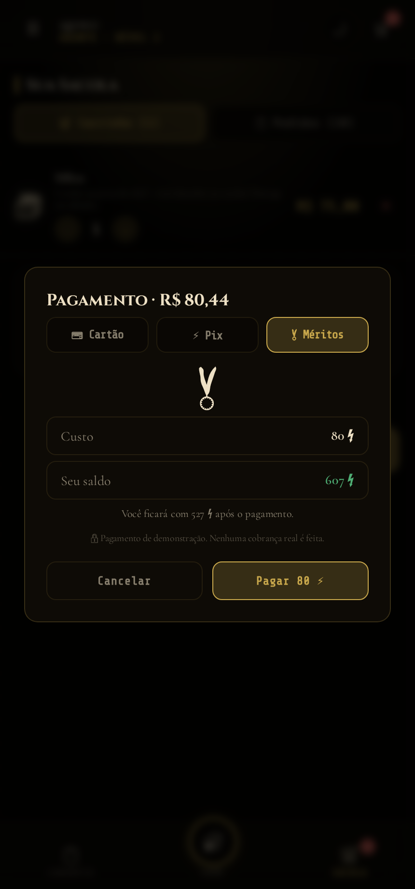
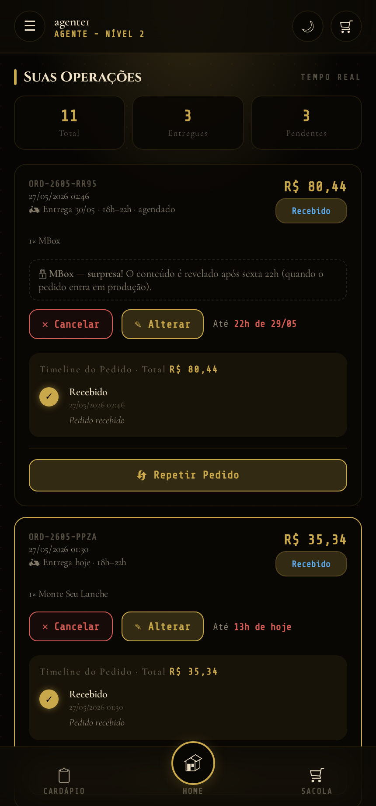
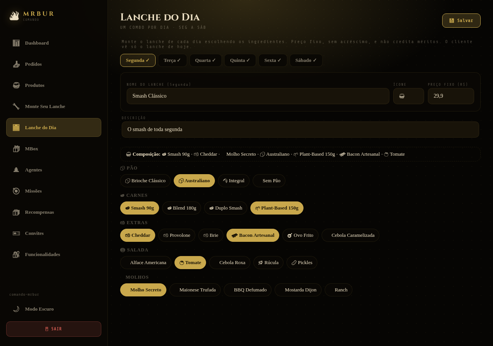
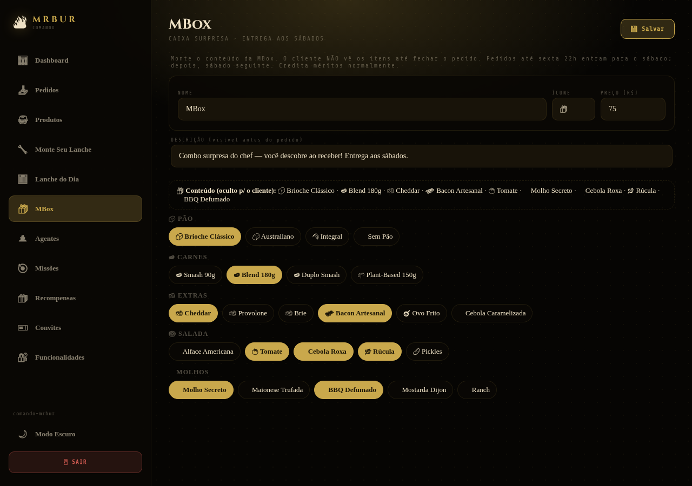
Foram adotadas duas frentes de teste. A primeira, de testes automatizados de ponta a ponta (E2E), utilizando a ferramenta Playwright, exercitando fluxos do cliente e do administrador contra o ambiente real. A segunda, de testes manuais exploratórios, que originaram um relatório de funcionalidades com a catalogação de defeitos por severidade (críticos, médios e menores) e suas respectivas correções. Esse processo elevou a confiabilidade do MVP e validou os fluxos principais: cadastro por convite, criação de pedido, atualização de status em tempo real e crédito de méritos.
A aplicação adota uma arquitetura modular e organizada, sem dependência de frameworks pesados, priorizando o domínio dos fundamentos. Os principais elementos são:
O MVP foi implementado com as seguintes tecnologias e funcionalidades:
https://trabalhohowx.web.app.Foram analisadas as principais alternativas disponíveis no mercado para os comércios locais, comparadas segundo parâmetros relevantes para o problema. O quadro a seguir sintetiza a análise.
| Parâmetro | iFood / Rappi (marketplaces) | Cardápio digital simples | MrBur (nossa solução) |
|---|---|---|---|
| Comissão por pedido | Alta (12%–30%) | Baixa/nenhuma | Nenhuma (modelo por assinatura) |
| Fidelização gamificada | Limitada/inexistente p/ o lojista | Inexistente | Completa (méritos, missões, ranks) |
| Relação direta com o cliente | Não (dados do marketplace) | Parcial | Sim (base própria) |
| Gestão de entregas própria | Da plataforma | Não | Sim (painel do motoboy + chat) |
| Aplicativo instalável (PWA) | App próprio | Geralmente não | Sim |
| Foco no comércio local | Não | Parcial | Sim |
A análise evidencia que o MrBur ocupa um espaço pouco explorado: oferece, ao comércio local, autonomia em relação aos marketplaces, fidelização gamificada e gestão de entregas integrada, a um custo previsível por assinatura.
O vídeo de apresentação demonstra o MVP em funcionamento, percorrendo os fluxos do cliente, do administrador e do entregador, conforme o roteiro elaborado pelo grupo. O vídeo está disponível no seguinte endereço:
Link do vídeo: [inserir link do YouTube/Drive — vídeo não listado]
Aplicação publicada para avaliação: https://trabalhohowx.web.app. Credenciais de teste — Administrador: admin@mrbur.com / mrbur2025; Agente e Motoboy: contas de demonstração informadas no vídeo.
Esta etapa parcial demonstrou a viabilidade de uma solução tecnológica voltada a um problema concreto da comunidade: a vulnerabilidade dos comércios de alimentação locais diante dos marketplaces e a informalidade na operação de entregas. A partir da geração da ideia e de uma prova de conceito, o grupo organizou o trabalho com o framework SCRUM, modelou o negócio com a metodologia CANVAS e construiu um MVP funcional, publicado em ambiente real e testado de forma automatizada e manual.
Os resultados alcançados — uma plataforma operacional com pedidos em tempo real, fidelização gamificada, painel administrativo, gestão de entregas e instalação como aplicativo — confirmam o potencial da proposta de fortalecer o comércio local e organizar a cadeia de entrega da comunidade. Para a Etapa 2, prevê-se a validação do MVP com usuários reais, a entrega técnica dos artefatos e a socialização dos resultados em seminário virtual.
OSTERWALDER, A.; PIGNEUR, Y. Business Model Generation: inovação em modelos de negócios. Rio de Janeiro: Alta Books, 2011.
RIES, E. A Startup Enxuta. São Paulo: Lua de Papel, 2012.
SCHWABER, K.; SUTHERLAND, J. O Guia do Scrum. 2020. Disponível em: https://scrumguides.org. Acesso em: maio 2026.
GOOGLE. Documentação do Firebase. Disponível em: https://firebase.google.com/docs. Acesso em: maio 2026.
MOZILLA. Progressive Web Apps (MDN Web Docs). Disponível em: https://developer.mozilla.org/pt-BR/docs/Web/Progressive_web_apps. Acesso em: maio 2026.
ASSOCIAÇÃO BRASILEIRA DE NORMAS TÉCNICAS. NBR 14724: informação e documentação: trabalhos acadêmicos: apresentação. Rio de Janeiro, 2011.